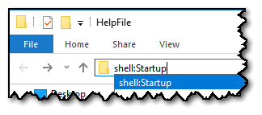

Installing
Although the Teacher Toolkit is fully portable, and will run directly from any USB pen, or folder, there are many advantages to hosting it on a shared, networked folder.
Such as, the ability to use the following features:
Utilising the Best Practice Database
Sharing questions for AfL games
Sharing statements for reports/references
To install the Teacher Toolkit on a networked drive:
For versions of Windows before Windows 10:
1) Create a networked folder for the Teacher Toolkit
2) Add a shortcut link to everyone's STARTUP MENU
For Windows 10, create a shortcut in the location:
shell:startup

These methods will ensure the Teacher Toolkit starts automatically whenever the user logs on.
Point to note:
Although this is now a shared piece of software, being accessed by everyone - any personal data (such as Post-Its, etc) are stored in the user's own space and are not shared with others.